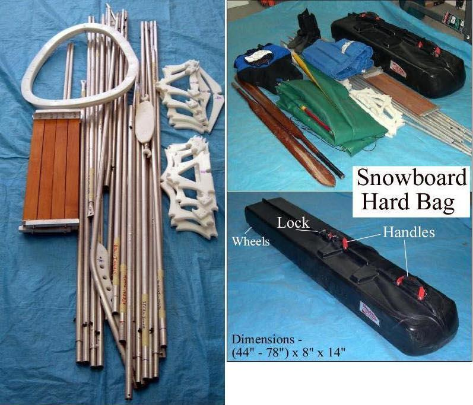

| Frame Maintenance (4 of 4) | Menu Last Page Next Page |
|

The Sea Ranger, Sea Rover, and Sea Rider have up to 6ft tube sections. A hard plastic telescoping snowboard case is large enough to hold the longer sections of these kayaks. The one piece 22" X 16" coaming must be transported in a suitcase or duffle bag due to it's width. A two piece "split" coaming is in the works.
|
|